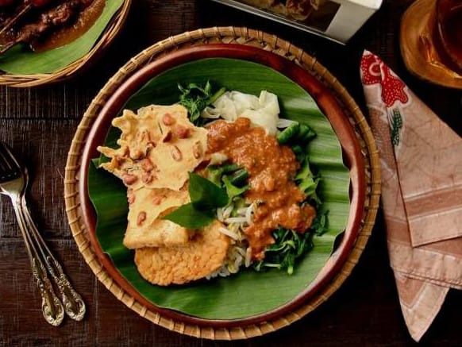

Pecel Sayur
Pecel Sayur adalah makanan yang terdiri atas sayuran rebus, seperti kacang panjang, bayam, taoge yang disiram dengan kuah sambal kacang dan sebagainya. Pecel merupakan penganan khas suku Jawa yang berasal dari Daerah Istimewa Yogyakarta dan sudah ada sejak abad ke-9 masehi. Penganan tradisional yang kaya gizi ini sangat populer di Indonesia terutama di Jawa Timur, Jawa Tengah, Ngawi, Madiun dan D.I Yogyakarta.
Alat dan Bahan:
- Bayam - 1 ikat, ambil daunnya
- Kol - 5 lembar, iris sesuai selera
- kacang panjang - 6 lonjor, potong sekitar 3 sentimeter
- taoge - 50 gram, bersihkan
- Air Hangat - 150 ml
- Rempeyek Kacang - secukupnya
- Cabai merah besar - 3 buah
- Cabai rawit merah - 8 buah
- Bawang putih - 3 siung
- Garam - 1 sendok teh
- Kacang tanah - 250 gram, goreng sampai matang
- Kencur - 5 cm
- Gula merah - 3 sendok makan, iris
- Air asam jawa - 1 sendok makan
- Minyak goreng - 3 sendok makan
- Wajan atau Penggorengan
- Pisau dan Talenan
- Kompor
Cara Memasak:
- Goreng cabai merah besar, cabai rawit merah, dan bawang putih hingga layu.
- Haluskan kacang tanah goreng bersama tumisan cabai, kencur, gula merah, dan garam.
- Tambahkan air asam jawa dan air hangat. Aduk hingga tercampur rata.
- Kemudian, rebus daun bayam, irisan kol, potongan kacang panjang, dan taoge hingga matang, tiriskan.
- Siapkan piring, lalu tata sayuran di dalam piring.
- Tuangkan bumbu pecel di atasnya. Sajikan pecel sayur dengan rempeyek udang.